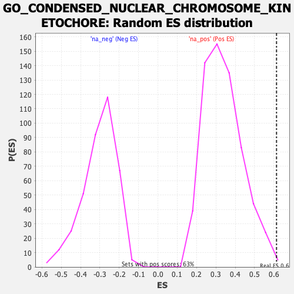

| | | Dataset | CK_basal |
| Phenotype | NoPhenotypeAvailable |
| Upregulated in class | na_pos |
| GeneSet | GO_CONDENSED_NUCLEAR_CHROMOSOME_KINETOCHORE |
| Enrichment Score (ES) | 0.6138014 |
| Normalized Enrichment Score (NES) | 1.8133435 |
| Nominal p-value | 0.0031897926 |
| FDR q-value | 0.26797253 |
| FWER p-Value | 1.0 |
Table: GSEA Results Summary
 Fig 1: Enrichment plot: GO_CONDENSED_NUCLEAR_CHROMOSOME_KINETOCHORE
Fig 1: Enrichment plot: GO_CONDENSED_NUCLEAR_CHROMOSOME_KINETOCHORE
Profile of the Running ES Score & Positions of GeneSet Members on the Rank Ordered List
| SYMBOL | RANK IN GENE LIST | RANK METRIC SCORE | RUNNING ES | CORE ENRICHMENT | | 1 | BUB1 | 1 | 4.971 | 0.2239 | Yes |
| 2 | PLK1 | 186 | 2.680 | 0.3352 | Yes |
| 3 | CENPT | 539 | 2.277 | 0.4197 | Yes |
| 4 | CENPA | 541 | 2.274 | 0.5221 | Yes |
| 5 | NDC80 | 2492 | 1.483 | 0.4890 | Yes |
| 6 | CENPO | 2575 | 1.465 | 0.5508 | Yes |
| 7 | CENPK | 2626 | 1.456 | 0.6138 | Yes |
| 8 | BUB1B | 6023 | 0.804 | 0.4760 | No |
| 9 | CCNB1 | 7301 | 0.602 | 0.4376 | No |
| 10 | MIS12 | 10898 | 0.039 | 0.2550 | No |
| 11 | PMF1 | 12167 | -0.161 | 0.1973 | No |
| 12 | MIS18BP1 | 13036 | -0.312 | 0.1669 | No |
| 13 | DSN1 | 13867 | -0.456 | 0.1449 | No |
| 14 | CENPC | 14082 | -0.493 | 0.1561 | No |
| 15 | PELI1 | 15405 | -0.756 | 0.1224 | No |
| 16 | REC8 | 16416 | -0.971 | 0.1144 | No |
| 17 | NUF2 | 16510 | -0.996 | 0.1545 | No |
Table: GSEA details [plain text format]

Fig 2: GO_CONDENSED_NUCLEAR_CHROMOSOME_KINETOCHORE: Random ES distribution
Gene set null distribution of ES for GO_CONDENSED_NUCLEAR_CHROMOSOME_KINETOCHORE